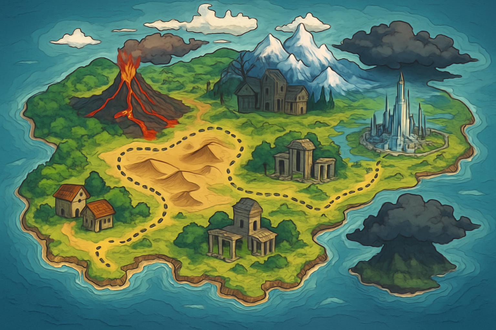

Part I: The Worlds of Idaten Jump
Section 1.1: The Duality of the X-Zone: Earth and a Parallel World

The universe of Idaten Jump is built upon a dual-world cosmology, centered on two distinct yet interconnected realms, both known as the "X-Zone." The first X-Zone is a tangible, physical location on Earth: a mountain biking (MTB) practice course meticulously constructed by Takeshi Yamato for his son, Sho.[1, 2] This place is more than just dirt and ramps; it is a sanctuary of memory for Sho, imbued with the happy moments he spent with his father before his mysterious disappearance.[2, 3] It is this deep sentimental value that fuels the initial conflict of the series, a race against the rival Team Shark Tooth for ownership of this sacred ground.[3, 4]
The second X-Zone is a parallel isekai world, a vibrant and dangerous dimension where the majority of the series unfolds.[5, 6, 7] The transition between these worlds is facilitated by a mysterious phenomenon: a swirling black smoke that appears during moments of intense MTB competition.[1, 4] It was during the climactic race between Sho Yamato and Gabu Samejima for the Earthly X-Zone that this portal first manifested, engulfing the riders and transporting them to the alternate world.[3, 8]
This parallel X-Zone is not an empty stage for races but a fully realized world with its own history, political structure, and a royal lineage, to which the mechanic Yuki belongs.[4] Its stability is intrinsically linked to a powerful artifact known as Imperial X, a legendary Idaten Bike. It was the critical failure of Imperial X that originally prompted the X-Zone to summon Takeshi Yamato from Earth to perform repairs, revealing a deeper connection between the worlds.[3, 4]
A fundamental law governing these two worlds is time dilation. Time within the parallel X-Zone flows at a much faster rate than on Earth.[2, 3] This is most starkly illustrated by the character Hosuke. During the years Takeshi Yamato spent on Earth starting a family, Hosuke, who remained in the X-Zone, aged from a contemporary of Takeshi's brother into an old man.[2, 3] This temporal discrepancy adds a layer of consequence and tragedy to the separation between the worlds.
The existence of these two realms and the mechanism connecting them are not products of random chance. The revelation that Takeshi Yamato is, in fact, a native of the X-Zone who was transported to Earth as a child reframes the entire narrative.[3] The black smoke is not a chaotic portal but a purposeful mechanism tied to the X-Zone's needs—first to bring Takeshi back to repair Imperial X, and later to bring his son, Sho, into a world intrinsically tied to his lineage. Takeshi naming the Earthly practice course the "X-Zone" ceases to be a coincidence; it becomes an act of profound, perhaps subconscious, foreshadowing, a link to the home he barely knew. Therefore, Sho's arrival is not an accident but the fulfillment of a destiny. His journey is not one of being lost in a strange land, but a "coming home" to a heritage he never knew he possessed.
Section 1.2: A Cartographer's Guide to the X-Zone
The world of the X-Zone is a vast and varied landscape, designed to test the limits of any MTB rider. The journey of Sho Yamato and his friends takes them across a continent of extreme environments, all leading toward a central metropolis that holds the key to their return.
X-City: The political and geographical heart of the X-Zone, X-City is the primary objective for Sho's team during the first half of the series.[1] Originally governed by a legitimate mayor, the city is overthrown by Gabu Samejima and his Team Shark Tooth, who establish a brutal dictatorship one year prior to Sho's arrival.[1, 3] Dominating the city's skyline is the X-Tower, a colossal structure that serves as the focal point for the Idaten Battle Tournament and is said to hold the power to send the Earth-born riders home.[1] The city itself becomes the arena for the tournament arc, with its streets and structures forming complex race courses.[8, 9]
Imperial Island: The primary setting for the second half of the series, Imperial Island is the heavily fortified base of operations for the sinister Team X.[1, 3] It is often referred to as a "phantom" or "illusion" island, suggesting it may exist in a separate dimensional space or is cloaked by powerful magic, making it difficult to locate.[4, 10] It is here that the final, world-saving confrontation with the ancient evil possessing Takeshi Yamato takes place.[10]
Diverse Battle Courses:

The Desert: An early challenge featuring vast sand dunes and punishing heat, testing riders' endurance and their bikes' durability.[11]

The Volcano: A treacherous course set on the slopes of an active volcano, where riders must navigate rivers of lava and falling ash.[1, 12, 13]

The Ghost Town & MTB Cemetery: A desolate and eerie landscape filled with decaying buildings and the "graves" of broken mountain bikes.[4, 5]
The Snow-Covered Mountains: A frigid region of ice and snow, home to the rider Gen and his daughter Rin. The slippery conditions demand exceptional balance and control.[1, 14]
Ancient Ruins: A course that winds through the crumbling remains of an ancient civilization, featuring narrow pathways and complex architectural obstacles.[2, 3]
Gold Celebresort City: A luxurious but corrupt resort city run by Team ST members Yoko and Rika, built by exploiting the local populace.[3, 15, 16, 17]
Visual Aid: Conceptual Map of the X-Zone
*(A fan-made, lore-consistent map would be presented here, visually charting the journey of Team Idaten. The map would depict a large continent, with Sho's starting point on one coast. A dotted line would trace their path through stylized icons representing the Desert, Volcano, Ghost Town, and Snow-Covered Mountains. This path would converge on the large, centrally located X-City, marked by the prominent X-Tower. Offshore, shrouded in swirling mists and storm clouds, would be Imperial Island, labeled with a "???" to signify its mysterious and foreboding nature. This visual guide serves to ground the narrative's progression and make the world feel more tangible and interconnected for the reader.[18, 19, 20])*
Part II: The Riders and Their Allies
Section 2.1: The Core Team (Team Idaten)
Sho Yamato (山登 翔)
The series protagonist, Sho is a fifth-grade student with an infectious and all-consuming passion for mountain biking.[5] Initially, his motivation is simple and relatable: win the Idaten Battles to collect ten gold emblems and return home.[3] However, his journey forces him to mature rapidly. He is defined by his incredible natural talent for performing amazing tricks, his unwavering optimism, and a deep, emotional connection to his father, Takeshi.[2] Sho's character arc is one of escalating responsibility. He evolves from a boy trying to save himself to a hero liberating X-City from Gabu's tyranny, and finally to a savior battling a cosmic evil to protect two worlds.[2, 3] His ultimate test is confronting his own possessed father, a battle he wins not through pure power, but through the strength of his spirit and the bonds he has forged. His final decision to remain in the X-Zone as its new guardian, before Hosuke grants him the ability to travel freely between worlds, signifies his complete transformation from a lost child into a mature and responsible protector.[2, 3, 21]

Makoto Shido (獅堂 まこと)
Sho's childhood friend and a highly competitive female MTB rider in her own right.[2, 6] Makoto is portrayed as kind, fiercely determined, and deeply loyal, though she can be prone to moodiness and moments of self-doubt.[22] Her most significant development occurs with the revelation that her bike, Neptune, is one of the legendary Idaten Bikes.[2, 4] This discovery elevates her from a supportive friend to a front-line combatant with unique abilities, particularly on water-based courses. Her relationship with her older brother, the trial bike champion Kyoichi, is a central element of her character, serving as both a source of inspiration and occasional conflict.[23, 24]
Kakeru Sakamaki (坂巻 駆)
The third member of the core trio and the team's brilliant mechanic.[4, 6] While not a racer, Kakeru's role is absolutely indispensable. He is responsible for the maintenance, repair, and strategic modification of the team's bikes, often working under immense pressure to prepare them for the unique challenges of each Idaten Battle course.[4, 25] Kakeru represents the crucial theme that victory is a team effort, where the support crew is just as vital as the rider on the track. His intelligence and technical expertise frequently provide the winning edge in critical moments.
Hosuke (ホースケ)
A talking owl who befriends the group early in their journey and serves as a wise companion and occasional comic relief.[4] For much of the series, Hosuke is a guide, but his character is given immense depth and importance with the climactic revelation of his true identity: he is the former King of the X-Zone and Yuki's grandfather.[1, 2] He disguised himself as an owl in a desperate plot to combat the ancient evil that threatened his world, a transformation that caused him to lose the memory of his past life until the final arc.[2, 3] After the evil is defeated, Hosuke's restored knowledge and power are what ultimately allow Sho to travel freely between Earth and the X-Zone, making him one of the most pivotal figures in the entire series.[3, 17]
Section 2.2: The Legendary Riders
Kyoichi Shido (獅堂 京一)
Makoto's older brother, a trial biking champion renowned for his supreme skill and level-headed demeanor.[4, 26] He is introduced as a mysterious, masked rider who secretly aids Sho and his friends from the shadows, testing Sho's abilities.[8, 27] Once his identity is revealed, he becomes a core ally in the fight against Team ST. His rivalry with Sho is one of mutual respect, pushing both riders to improve.[28] Kyoichi's resolve is tested when he is captured and controlled by Team X, forcing Sho to fight and free him. He is a pillar of strength and a master tactician, respected by allies and enemies alike.[3, 26]
Koei (孤影)
A ninja-themed rider of incredible speed and skill, initially introduced as a mercenary working for Gabu and Team ST.[4, 29, 30] Koei's antagonism is driven by a sympathetic motive: he needs money to pay for his younger sister Kiku's medical treatment, making him a reluctant villain.[1, 4] After Sho and his friends help rescue Kiku from Gabu's clutches, Koei undergoes a complete redemption arc.[31, 32] He renounces Team ST and becomes one of Sho's most loyal and powerful allies, even taking on the responsibility of protecting X-City in the heroes' absence.[1, 17]
Arthur (アーサー)
A knight-themed rider whose duty is to serve as a guardian of the X-Tower, the gateway to returning home.[1, 4, 33, 34] Nicknamed "The Painter" for his artistic and fluid riding style, Arthur is an honorable and powerful warrior. He works closely with Yuki to protect the secrets of the X-Zone and plays a decisive role in the X-City tournament, where he defeats Taiga Samejima.[1, 3] He is a steadfast ally in the fight against both Gabu and the later threat of Team X, embodying the principles of chivalry and duty.[35, 36]
Yuki (ユウキ)
A highly skilled mechanic who provides critical assistance to Sho's team on numerous occasions.[4, 37, 38] Her true identity is a major revelation: she is a princess of the X-Zone's royal family and Hosuke's granddaughter.[1, 2, 4] Despite her noble lineage, Yuki's true passion is mechanics, and she rebels against a purely ceremonial role to pursue her craft.[4, 39, 40] Her knowledge of the X-Zone's secrets and its ancient history makes her an invaluable source of information and a key figure in the struggle to save her world.
Section 2.3: The Yamato Family
Ayumu Yamato (山登 あゆむ)
Sho's energetic younger brother, who joins the adventure during the team's second journey into the X-Zone.[4] Initially, Ayumu's riding style is reckless and dangerously uncontrolled, driven by raw power without finesse.[41] Through the mentorship of Koei, he learns discipline and control, channeling his immense potential.[4] He becomes the chosen rider of the powerful Imperial Dragon bike, and his explosive power proves vital in the large-scale battles against the forces of Team X.[2, 4]
Takeshi Yamato (山登 猛)
Sho and Ayumu's father, and the most enigmatic character in the series. He is introduced through flashbacks as a loving father who built the X-Zone practice course before his disappearance in a biking accident.[1, 3, 42, 43] The truth is far more complex: Takeshi is an X-Zone native who was transported to Earth as a child.[3] The "accident" was actually the X-Zone summoning him back to repair the failing Imperial X.[4] During his time there, struggling against a corrupting influence, he built the six legendary Idaten Bikes and their counterparts to ensure the future protection of the world.[4, 41] In the second arc, he emerges as the formidable leader of Team X, his body and mind possessed by an ancient, malevolent entity native to the X-Zone.[1, 3, 41] The final battle of the series is Sho's desperate fight to purge this evil and reclaim his father. After being freed, Takeshi, now reunited with his true home, chooses to stay in the X-Zone to train Sho as its new guardian, completing the cycle of legacy and responsibility.[3]
Visual Aid: Character Relationship Chart
*(A sociogram would be presented here, mapping the complex web of relationships. Sho Yamato would be at the center. Solid blue lines of "Alliance/Friendship" would connect him to Makoto, Kakeru, Yuki, Arthur, and a post-redemption Koei and Gabu. A solid black "Familial Bond" line would connect him to Takeshi and Ayumu. A dashed red line of "Antagonism to Alliance" would connect Sho to Gabu and Koei, illustrating their character arcs. A solid red line of "Rivalry" would connect Sho and Kyoichi. A jagged purple line labeled "Possession" would emanate from the "Ancient Evil" entity, connecting to Takeshi and a temporarily controlled Kyoichi. This chart would provide a clear, instant visual summary of the series' dynamic social structure.[44, 45])*
Part III: The Antagonistic Forces
Section 3.1: Team Shark Tooth (Team ST)
Overview and Goals: Team Shark Tooth, later known as Team ST upon their takeover of X-City, serves as the primary antagonistic force for the first half of the series.[1, 2] Having arrived in the X-Zone a year before Sho and his friends, their motivations are direct and worldly: conquest, power, and control.[3, 17] Led by the ambitious Gabu Samejima, they overthrow the legitimate government of X-City and rule it as a dictatorship, challenging any rider who dares to oppose them.[1, 17] Their goal is to dominate the X-Zone through sheer force and intimidation.
Hierarchy and Key Members:
- Gabu Samejima (鮫島 牙舞): The charismatic, cunning, and powerful leader of Team Shark Tooth.[17, 46] Despite being the younger of the Samejima brothers, his ambition and strength make him the undisputed boss.[17] His rivalry with Sho is the central conflict of the first arc, beginning on Earth and culminating in a final battle for the fate of X-City.[1, 4, 47] After his defeat, Gabu shows significant growth, eventually returning as a powerful ally against the greater threat of Team X.[1, 17]
- Taiga Samejima (鮫島 大牙): Gabu's older brother and the team's second-in-command.[3, 17] While loyal to his brother, he is less ruthless. It is Taiga who first reveals to Sho that they have been in the X-Zone for a year.[3] His defeat at the hands of Arthur during the X-City tournament leads to his expulsion from the team, but he later finds a new purpose as a protector of the city.[3, 17]
- Key Operatives: On their journey to X-City, Sho's team is challenged by a variety of specialized Team ST members, each controlling a specific territory or using unique tactics. These include: Captain Jackal, Yoko & Rika, Mr. Teacher, and Shin the Shadow.[1, 4, 17]
Section 3.2: Team X and the Ancient Evil
Overview and Goals: The antagonists of the second half, Team X represents a fundamental shift in the nature of the series' conflict.[1, 48] Based on the mysterious Imperial Island, their goal is not mere conquest but total annihilation—the destruction of both the X-Zone and the human world.[3] They are a far more sinister and powerful force than Team ST.
The Ancient Evil: The true villain is not a person but a primordial, malevolent entity native to the X-Zone's ancient past.[1, 3, 41] This unnamed evil possesses the body of Takeshi Yamato, using his legendary status and skills to lead Team X and command its ultimate weapon, the Idaten Bike Imperial X.[3, 4, 41] The entity's motivations are apocalyptic, seeking to undo creation itself.
Methods of Control: The Dark Emblems: Team X's primary method for building its army is the use of Dark Emblems.[1, 49, 50] When a rider is defeated by a Team X agent, a Dark Emblem is affixed to their MTB, corrupting their will and turning them into a mindless, zombie-like slave loyal only to Team X.[1, 2] This raises the stakes of every Idaten Battle from a contest of skill for a prize to a fight for one's very soul.
Key Agents:
- Takeshi Yamato (Possessed): The leader and most powerful warrior of Team X, wielding the devastating power of Imperial X.[3, 4]
- Corrupted Riders: Numerous riders, including powerful former allies, fall victim to the Dark Emblems. Notable victims include the fisherman Masagi, the vampire-like Count Freddy, and even the formidable Kyoichi Shido, whom Sho is forced to battle to free.[1, 2, 3]
- Imperial Knights: The rank-and-file soldiers of Team X. They are an army of identical, white-suited riders who attack in swarms, serving as the team's formidable infantry.[2]
Part IV: The Technology of Idaten Battle
Section 4.1: The Legendary Idaten Bikes - Technical Manual
The six core Idaten Bikes were all constructed by Takeshi Yamato during his time in the X-Zone, designed to be wielded by riders with specific qualities to protect the world.[4]
Table: Comparative Stat Table of Idaten Bikes
| Bike | Top Speed (Flat) | Acceleration | Agility/Handling | Durability | Special Ability Potency |
|---|---|---|---|---|---|
| Flame Kaiser | 8/10 | 9/10 | 9/10 | 8/10 | 10/10 |
| Neptune Emperor | 7/10 (10/10 on Water) | 7/10 | 8/10 | 7/10 | 8/10 |
| Thunder Emperor | 8/10 | 8/10 | 10/10 | 7/10 | 7/10 |
| Bloody Fang | 9/10 | 9/10 | 7/10 | 9/10 | 9/10 |
| Aero Scissors | 10/10 | 7/10 | 9/10 | 6/10 | 8/10 |
| Hammer Head | 6/10 | 6/10 | 6/10 | 10/10 | 9/10 |
Individual Bike Profiles
Designation: Flame Kaiser (フレイムカイザー)
- Rider: Sho Yamato
- Builder: Takeshi Yamato
- Core Concept: Phoenix / Hope. A well-balanced bike designed for downhill racing and aerial maneuvers, built to channel Sho's boundless potential and indomitable spirit.
- Unique Abilities & Special Moves: Idaten Jump, Idaten Miracle Jump, Inherent Ability - Pathfinding.

Designation: Neptune Emperor (ネプチューン)
- Rider: Makoto Shido
- Builder: Takeshi Yamato
- Core Concept: Dolphin / Water. A bike specialized for aquatic and unstable environments.
- Unique Abilities & Special Moves: Surface Riding, Enhanced Stability.
Designation: Thunder Emperor (サンダーエンペラー)
- Rider: Kyoichi Shido
- Builder: Takeshi Yamato
- Core Concept: Agility / Finesse. A bike built not for overwhelming power, but for perfect balance and unparalleled technical performance.
- Unique Abilities & Special Moves: King of Thunder technique.
Designation: Bloody Fang (ブラッディファング)
- Rider: Gabu Samejima
- Builder: Takeshi Yamato
- Core Concept: Wolf / Power. A bike built for raw, overwhelming force and destruction.
- Unique Abilities & Special Moves: Bloody Impact (Poison Impact).
Designation: Aero Scissors (エアロシザース)
- Rider: Koei
- Builder: Takeshi Yamato
- Core Concept: Fox / Speed. A bike designed for ultimate straight-line velocity and aerodynamic performance.
- Unique Abilities & Special Moves: Ninjutsu Hurricane.
Designation: Hammer Head (ハンマーヘッド)
- Rider: Arthur
- Builder: Takeshi Yamato
- Core Concept: Hammer / Strength. The most durable of the Idaten Bikes, built for brute force and smashing through obstacles.
- Unique Abilities & Special Moves: Iron Hammer Crush.
Section 4.2: The Imperial-Class Bicycles
These three bikes are a tier above the standard Idaten Bikes, artifacts from the ancient history of the X-Zone and tied directly to its stability.
Imperial X (インペリアルX)
The original, most powerful Idaten Bike. Its ultimate attack is Even's Destruction.
Imperial Dragon (インペリアルDG)
Ridden by Ayumu Yamato, it's a miniature version of Imperial X that channels the rider's potential.
Imperial Tiger (インペリアルタイガー)
A versatile bike that can perfectly replicate the special moves of any skilled rider who uses it.
Part V: The Rules of Engagement and The Spoils of Victory
Section 5.2: The Emblems - Keys to Power and Freedom
Emblems are the currency of victory and the central MacGuffin of the Idaten Jump universe. They are physical representations of a rider's status and the key to progressing through the world.
Silver Emblems
The most common type, held by generic or less powerful riders.
Gold Emblems
The standard held by skilled riders and the primary objective of the first story arc.
The Dark Emblems
Sinister artifacts used by Team X to enslave defeated riders.
Part VI: Narrative Synopsis
Section 6.1: Chronological Event Log (The 52-Episode Saga)
Arc 1: The Quest for the Emblems (Episodes 1-20)
The story begins on Earth, where passionate MTB rider Sho Yamato, along with his friends Makoto Shido and Kakeru Sakamaki, are locked in a race against Gabu Samejima's Team Shark Tooth for ownership of the local X-Zone practice course.[3, 4, 5] During the race, a mysterious black smoke engulfs them, transporting them to a parallel world also called the X-Zone.[4, 5] There, they learn the fundamental rule of their new reality: to return home, they must compete in high-stakes Idaten Battles to win ten Gold Emblems from other riders.[1, 3] This sets them on a grand journey across the diverse landscapes of the X-Zone. Along the way, they face numerous members of Team ST, including the cheating Shin the Shadow, the exploitative resort owners Yoko and Rika, and the formidable Captain Jackal.[1, 4, 17] During this quest, they forge crucial alliances with the expert mechanic Princess Yuki and the mysterious masked rider, who is eventually revealed to be Makoto's highly skilled older brother, Kyoichi Shido.[4, 27] This arc focuses on the core trio's adaptation to the new world, the discovery of their own potential, and their determined push towards the capital, X-City.[4, 73]
Arc 2: The X-City Tournament (Episodes 21-32)
Upon finally reaching X-City, the heroes find it is not a sanctuary but a city under the iron-fisted rule of Gabu Samejima, who has established himself as its dictator.[1, 46] In a display of power, Gabu defeats Sho and steals all of his collected Gold Emblems, forcing Sho to enter the Idaten Battle Tournament to win them back.[1] This arc introduces Arthur, the honorable knight rider and guardian of the X-Tower, who becomes a key ally.[4, 74] It also features the critical redemption arc of Koei, the ninja rider. Initially one of Gabu's top enforcers, Koei defects after Sho helps save his ailing sister, Kiku, from Gabu's manipulation.[1, 4] The arc builds to a climactic final battle at the top of the X-Tower, where Sho, with the help of his allies, confronts Gabu in a dramatic showdown between Flame Kaiser and Bloody Fang.[75, 76] With Gabu's defeat, X-City is liberated, and the path home is opened. The arc concludes with the friends saying their farewells and successfully returning to Earth.[77]
Arc 3: The War Against Team X (Episodes 33-52)
Peace is short-lived. Driven by the need to find his missing father, Sho leads the team back to the X-Zone, now accompanied by his younger brother, Ayumu.[16, 67] They arrive to find the world under assault by a new, far more dangerous enemy: Team X.[1, 49] This mysterious group, led from the shadows, uses sinister Dark Emblems to defeat and enslave riders, building a mindless army.[1, 2] The conflict becomes deeply personal with the shocking revelation that the leader of Team X is none other than Sho's father, Takeshi Yamato, possessed by an ancient evil native to the X-Zone.[41, 78] The stakes escalate to an apocalyptic level, as the entity's goal is the destruction of both the X-Zone and Earth.[3] Powerful allies, including Kyoichi, are captured and turned against the heroes by Dark Emblems, forcing Sho into painful battles to free them.[23] To face this ultimate threat, a grand alliance is formed, uniting all the Idaten Bike riders—including a redeemed Gabu Samejima—for a final assault on Team X's headquarters on Imperial Island.[79] The series culminates in a fateful confrontation between father and son. Sho, channeling the combined power and spirit of all his friends and their Idaten Bikes, battles the possessed Takeshi and his all-powerful Imperial X.[4] He successfully purges the ancient evil, saving his father and both worlds. In the aftermath, the X-Zone is revived, Takeshi is freed, and with the help of a restored King Hosuke, Sho gains the ability to travel between worlds, ensuring he can protect his new home while never being separated from his friends and family again.[2, 3]